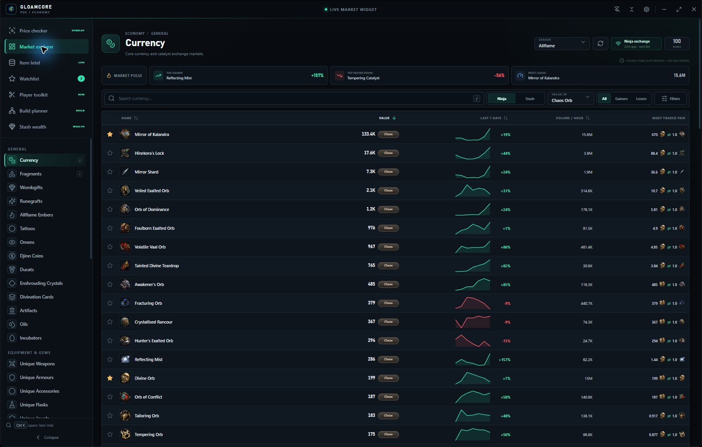
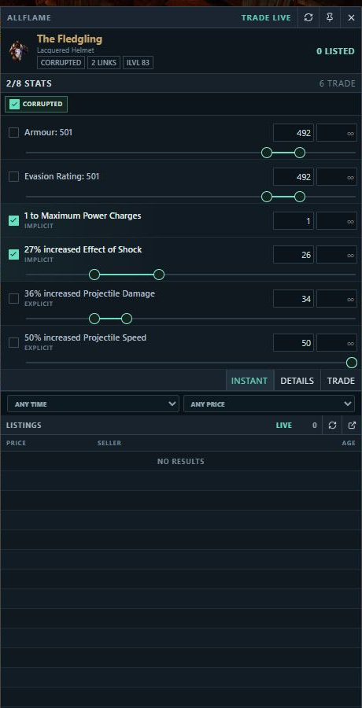
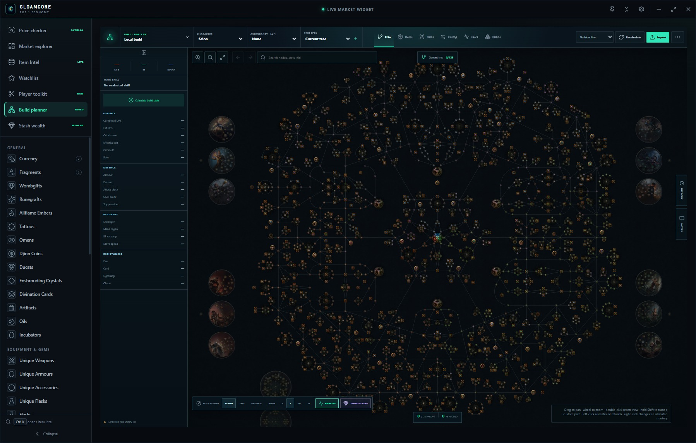
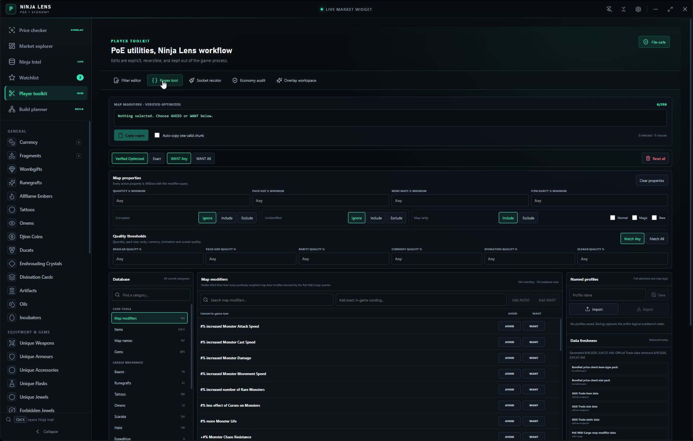

01
Price checker
Hover. Press Ctrl+D. Decide.
Parse copied item text locally, tune the exact modifier plan, compare anonymous official Trade listings, and open the complete query when needed.
Ctrl+D
A sharper Path of Exile desktop companion
Price the item under your cursor, read the live economy, inspect stash wealth, and work on builds without stitching together a dozen disconnected tabs.


One companion, five focused workflows
The app keeps high-value PoE work close together while each external service remains inside a clear security boundary.
Price checker
Parse copied item text locally, tune the exact modifier plan, compare anonymous official Trade listings, and open the complete query when needed.
Market Explorer
Search current poe.ninja markets with trends, liquidity context, league filters, targets, and resilient last-good data.
Stash Wealth
Keep the real Wealthy Exile dashboard open in an isolated browser session with persistent sign-in and scoped ads-only filtering.
Build Lab
Import PoB data, edit passive trees and masteries, compare saved specs, and export the result to Path of Building.
Player Toolkit
Build item-filter rules, compose source-tracked regex, compare socket colours, pin references, and audit economy data.
New in 2.4.1
This release locks down game focus, cold-start capture, persistent stash sessions, and the complete new identity.
Read the release notesPassive card clicks and dismissal no longer pull keyboard focus away from the game.
The cold native copy path gets a guarded startup window without slowing the already-warm Ctrl+D flow.
The isolated Wealthy Exile profile persists across restarts and migrates safely even when a new profile already exists.
App, installer, updater, website, documentation, and mobile projects now share one clean GloamCore presentation.
Real product captures
Switch between the real workspaces below. No concept art and no simulated UI.


Clear boundaries
The app is explicit about what it reads, where data goes, and which service owns each session.
Read the security policyCtrl+D uses one ordinary item copy. It does not inspect game memory or inject into Path of Exile.
Market checks use public data and anonymous Trade routes. Account-session cookies are never requested.
Wealthy Exile owns its OAuth flow, cookies, and stash responses inside a dedicated sandboxed partition.
Installers, portable builds, updater metadata, checksums, source tags, and release notes are published together.
Windows x64
The installer supports in-app updates. The portable build is available when you prefer to manage updates manually.
Binaries are currently unsigned. Windows SmartScreen may ask you to confirm the publisher.
Keyboard first
Desktop shortcuts are rebindable in Settings. Conflicts are rejected without replacing the working binding.
Price checkRead the item under the cursor
Show or hideToggle the app globally
Instant searchOpen the market search
Item IntelOpen and focus reference search
Questions
No. It is an independent companion and is not affiliated with or endorsed by Grinding Gear Games.
No. One Ctrl+D check performs one ordinary copy action, parses that copied text, and shows a result. It does not inject, automate gameplay, send whispers, or inspect game memory.
No. Wealthy Exile runs inside a dedicated sandboxed Electron session. Its cookies, OAuth tokens, and stash responses are not exposed to the app renderer.
The current Windows binaries are not Authenticode-signed. Download only from this repository and use SHA256SUMS.txt to verify the file when needed.
Installed builds can check the public GitHub release channel and download a newer stable installer. Installation waits for you to choose Restart and install. Portable users update manually.
Ready when the item drops
One focused companion for the market, the item, the stash, and the build.